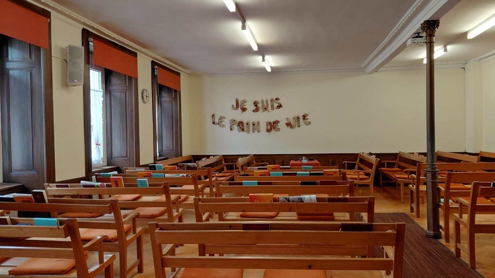

La Chaux-de-Fonds · Suisse
Une communauté fondée sur la Parole de Dieu
Ta parole est une lampe à mes pieds, et une lumière sur mon sentier.
Psaume 119 : 105
Nous sommes une assemblée de frères et sœurs, réunie au nom du Seigneur Jésus-Christ à La Chaux-de-Fonds. Nous cherchons à orienter notre vie ensemble selon les principes de la Bible, sans tradition d'église imposée ni structure cléricale — simplement guidés par la Parole de Dieu et l'Esprit Saint.
Que vous soyez croyant de longue date ou simplement en chemin, notre porte est ouverte. Venez partager avec nous l'adoration, l'étude des Écritures et la fraternité simple et sincère.
Car là où deux ou trois sont assemblés en mon nom, je suis au milieu d'eux.
Matthieu 18 : 20Prédication, louange et communion fraternelle. Tous sont les bienvenus.
Approfondissement de la Parole de Dieu en groupe — Épître aux Romains.
Célébration de la résurrection du Seigneur — repas fraternel à midi.
Il n'y a qu'un seul Dieu — le Dieu trinitaire : Père, Fils et Saint-Esprit.
Toute notre foi repose sur la Parole de Dieu, révélée dans les Saintes Écritures.
Après avoir autrefois, à plusieurs reprises et en plusieurs manières, parlé aux pères dans les prophètes, Dieu, dans ces derniers jours, nous a parlé dans le Fils. Hébreux 1 : 1-2
Jésus lui dit : Je suis la résurrection et la vie ; celui qui croit en moi, même s'il meurt, vivra. Jean 11 : 25
Mais le Consolateur, le Saint-Esprit, que le Père enverra en mon nom, vous enseignera toutes choses. Jean 14 : 26
Différentes rencontres pour toutes les générations, enracinées dans la foi et la communion fraternelle.
Adoration, prédication de la Parole et Sainte-Cène. Moment central de notre vie d'assemblée.
Dimanche — 09h30Enseignement biblique adapté aux enfants. A lieu dès que des enfants sont présents — les dates seront communiquées en temps voulu.
Dates à annoncerRencontres pour jeunes : discussions, louange, études et projets d'entraide. Les dates sont communiquées en temps voulu.
Dates à annoncerIntercession et prière en commun pour l'assemblée, le pays et le monde.
Jeudi — 20h00Ils persévéraient dans la doctrine des apôtres, dans la communion fraternelle, dans la fraction du pain et dans les prières.
Actes 2 : 42Dates communiquées en temps voulu
Le culte du dimanche est au cœur de notre vie d'assemblée. Chaque semaine, nous nous rassemblons librement autour du Seigneur Jésus-Christ pour l'adoration, la Sainte-Cène et l'enseignement de sa Parole.
Le culte commence par un temps d'adoration libre, où chacun est invité à participer — par une lecture, un cantique ou une prière. Nous célébrons ensuite ensemble la Sainte-Cène, en mémoire du sacrifice du Seigneur Jésus, comme il nous l'a demandé. Ce moment n'est dirigé par aucun responsable attitré : c'est l'Esprit qui conduit, et tout frère peut prendre part.
Après une courte pause, nous nous retrouvons pour l'enseignement de la Parole de Dieu. Un frère partage un message tiré des Écritures, ancré dans le texte biblique. Ces prédications visent à nourrir, encourager et édifier chaque participant dans sa foi.
Ajoutez ici un témoignage, une photo du culte, ou toute information complémentaire.
Dates communiquées en temps voulu
L'École du dimanche accueille les enfants en parallèle du culte pour adultes. Les enfants découvrent la Bible à travers des histoires, des chants et des activités adaptées à leur âge. L'École a lieu dès que des enfants sont présents — les dates seront communiquées.
Ajoutez ici un témoignage, une photo du culte, ou toute information complémentaire.
Dates communiquées en temps voulu
Le groupe Jeunesse rassemble les adolescents et jeunes adultes autour de discussions, de louange, d'études bibliques et de projets d'entraide. Un espace pour grandir dans la foi ensemble. Les rencontres ont lieu de manière irrégulière — les dates seront communiquées en temps voulu.
Ajoutez ici un témoignage, une photo du culte, ou toute information complémentaire.
Jeudi — 20h00
La réunion de prière est un moment essentiel de notre vie communautaire. Chaque jeudi soir, nous nous retrouvons pour intercéder ensemble — en personne à la Rue Numa-Droz ou via Zoom. Nous prions pour l'assemblée, pour la ville de La Chaux-de-Fonds, pour la Suisse et pour le monde.
Veillez et priez, afin que vous n'entriez pas en tentation ; l'esprit est bien disposé, mais la chair est faible.
Matthieu 26 : 41 — Version DarbyAjoutez ici un témoignage, une photo du culte, ou toute information complémentaire.
Prédication : « La grâce de Dieu qui apporte le salut »
Épître aux Romains, ch. 8 — La vie selon l'Esprit
Thème : « Foi et doute — peut-on croire aujourd'hui ? » — ouvert à tous
Célébration de la résurrection du Seigneur — repas fraternel à midi
Rencontre d'assemblées de la région romande — lieu à confirmer
Notre foi se fonde entièrement sur les Saintes Écritures — l'Ancien et le Nouveau Testament — Parole infaillible et inspirée de Dieu. Si quelqu'un nous demande notre confession de foi, nous lui remettons une Bible.
Nous croyons que toute la Bible — l'Ancien et le Nouveau Testament — est la Parole de Dieu, divinement inspirée et sans erreur dans les manuscrits originaux. Elle est la seule règle infaillible de foi et de conduite pour le croyant. Dieu a révélé son dessein de salut progressivement dans l'Ancien Testament, et ce dessein s'est pleinement accompli dans le Nouveau Testament, dans la personne et l'œuvre de Jésus-Christ.
Toute Écriture est divinement inspirée et utile pour enseigner, pour convaincre, pour corriger, pour instruire dans la justice.
2 Timothée 3 : 16Nous croyons en un seul Dieu éternel, tout-puissant, omniscient et saint — Créateur et Soutien de toutes choses. Ce Dieu unique se révèle en trois personnes distinctes et coégales : le Père, le Fils et le Saint-Esprit. Cette vérité fondamentale structure toute notre compréhension du salut et de la vie chrétienne.
Nous croyons que Dieu est le Père de tous les croyants, qui les a élus en Christ avant la fondation du monde. Il a envoyé son Fils unique dans le monde pour que nous ayons la vie par lui. Il gouverne souverainement l'histoire et accomplit ses desseins selon sa sagesse et sa bonté infinies.
Après avoir autrefois, à plusieurs reprises et en plusieurs manières, parlé aux pères dans les prophètes, Dieu, dans ces derniers jours, nous a parlé dans le Fils.
Hébreux 1 : 1-2Nous croyons que Jésus-Christ est le Fils éternel de Dieu — vrai Dieu et vrai homme. Il s'est fait chair par la naissance virginale, a vécu sans péché, et est mort sur la croix en sacrifice expiatoire pour nos péchés. Il est ressuscité bodiquement le troisième jour, est monté au ciel et intercède pour nous auprès du Père. Il reviendra personnellement, visiblement et dans la gloire.
C'est au nom seul de Jésus-Christ que nous trouvons le salut. La croix est au centre de notre foi, de notre adoration et de notre vie commune.
Jésus lui dit : Je suis la résurrection et la vie ; celui qui croit en moi, même s'il meurt, vivra ; et quiconque vit et croit en moi ne mourra pas à perpétuité.
Jean 11 : 25-26Nous croyons que le Saint-Esprit est la troisième personne de la Trinité, pleinement Dieu. Il convainc le monde de péché, de justice et de jugement. Il régénère le croyant à la nouvelle naissance, l'habite comme demeure permanente, le sanctifie progressivement et le conduit dans toute la vérité. C'est lui qui appelle, rassemble, éclaire et maintient l'Église dans la foi.
Mais le Consolateur, le Saint-Esprit, que le Père enverra en mon nom, vous enseignera toutes choses et vous rappellera tout ce que je vous ai dit.
Jean 14 : 26Nous croyons que Dieu a créé l'être humain à son image, pour être en relation avec lui. Par la désobéissance du premier homme, le péché est entré dans le monde, et avec lui la mort. Tout être humain naît pécheur, séparé de Dieu, et incapable de se sauver par lui-même. C'est pourquoi l'humanité a besoin d'un Sauveur.
Car tous ont péché et sont privés de la gloire de Dieu.
Romains 3 : 23Nous croyons que le salut est un don entièrement gratuit de Dieu, accordé par grâce et reçu par la foi en Jésus-Christ. Il ne peut être mérité ni acquis par des œuvres humaines. Celui qui croit au Seigneur Jésus-Christ reçoit la rémission de ses péchés, la réconciliation avec Dieu et la vie éternelle. Cette certitude du salut est l'une des joies profondes de la vie chrétienne.
Car c'est par la grâce que vous êtes sauvés, par le moyen de la foi ; et cela ne vient pas de vous, c'est le don de Dieu. Ce n'est pas par les œuvres, afin que personne ne se glorifie.
Éphésiens 2 : 8-9Nous croyons que l'Église est le corps de Christ, formé de tous les vrais croyants de toutes les nations et de tous les temps. Elle est visible localement dans des communautés de disciples qui se réunissent au nom du Seigneur, soumis à sa Parole et conduits par son Esprit.
Dans notre assemblée, nous n'avons pas de clergé établi. Nous essayons de réaliser le modèle néotestamentaire. Les dons que Christ a donnés à son Église — par exemple l'enseignement, l'évangélisation, le service pastoral — s'exercent librement dans les réunions et dans toute la vie commune.
Au centre de notre culte d'adoration se trouve la célébration de la Sainte-Cène, chaque dimanche, en mémoire du Seigneur et dans l'attente de son retour. N'hésitez pas à vous adresser à l'un ou l'autre d'entre nous. Nous serons heureux de discuter avec vous et d'apprendre à se connaître (ne soyez donc pas surpris que nous ne vous donnions pas la cène d'emblée).
Car là où deux ou trois sont assemblés en mon nom, je suis au milieu d'eux.
Matthieu 18 : 20Nous croyons au retour personnel du Seigneur Jésus-Christ pour enlever son Église (ensemble de tous les vrais croyants). Cette espérance vivante oriente notre vie, nous invite à la sainteté et nous encourage dans l'épreuve.
Et si je m'en vais et vous prépare une place, je reviendrai et je vous prendrai auprès de moi, afin que là où je suis, vous y soyez aussi.
Jean 14 : 3Nous sommes chrétiens — simplement chrétiens. Nous nous rassemblons autour de la Parole de Dieu et du Seigneur Jésus-Christ, à La Chaux-de-Fonds.
Nous nous rassemblons dans notre salle de réunions historique, au cœur de La Chaux-de-Fonds — un lieu chargé d'histoire et de prières depuis des générations.
Nous n'avons pas de clergé établi. Des anciens et des diacres, reconnus selon le modèle néotestamentaire, exercent leur service avec et parmi leurs frères et sœurs. La Parole de Dieu est notre seule règle. Chaque dimanche, nous célébrons la Sainte-Cène en mémoire du Seigneur.
Je vous exhorte donc à marcher d'une manière digne de la vocation à laquelle vous avez été appelés.
Éphésiens 4 : 1Rue Numa-Droz 77 — 2300 La Chaux-de-Fonds
Nous serons heureux de vous accueillir lors d'un de nos cultes ou rencontres. N'hésitez pas à nous écrire pour toute question.
Salle de réunions chrétiennes
Rue Numa-Droz 77
2300 La Chaux-de-Fonds
Chaque dimanche — 09h30
contact@assemblee-lachaux.ch
Soyez les bienvenus.
Panneau à l'entrée de notre salle